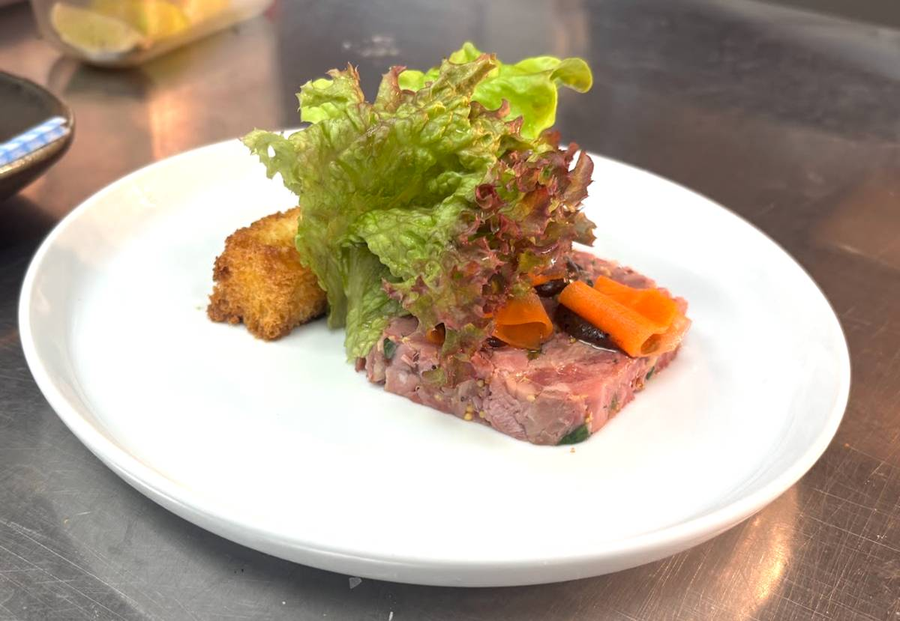

Plate
Large starter plate
Ingredients
- Ham terrine slice (~10 mm)
- Salt
- Oil
- Burnt apple sauce
- Brioche
- Yellow Mellow
- Mixed leaves
- Salad dressing
Order of assembly
- Bring terrine to room temp (under lights for a few mins)
- Toast brioche with Yellow Mellow (3–4 mins in oven).
- Wrap 3 x pickled carrot around a finger, and put on a jay cloth to dry a little
- Lightly dress terrine with salt and oil
- Add 3 small blobs of burnt apple dressing on top of the terrine
- Place a pickled carrot on each of the blobs
- Add a line of burnt apple sauce, upon which the brioche will sit.
- Leave space between the brioche and the terrine, into which we add mixed leaves and dress with house dressing.
Finish on the pass
Dress leaves just before serving (so they don’t wilt).